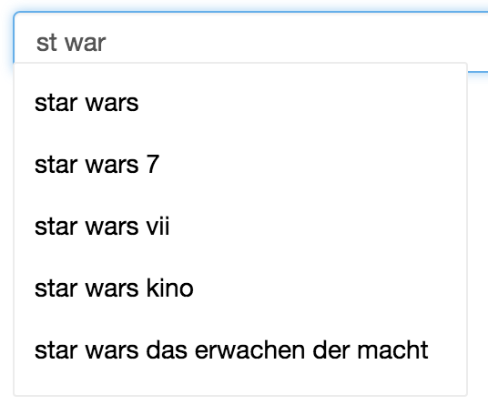
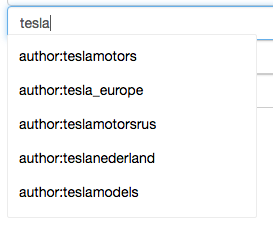
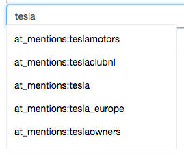
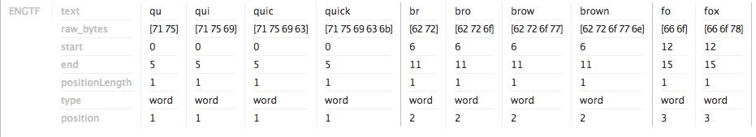
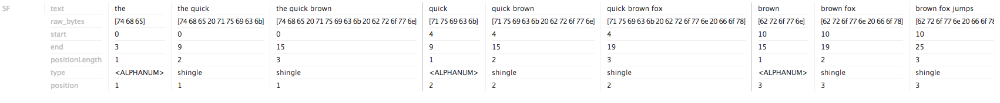

Query Expansion
Autosuggest
Keyphrases extraction
Ontologies
Query Autosuggest
- Based on historical queries from Analytics
- Suggest popular or recent topics
- Beyond keyword suggestion (phrases, query operators)
phrases / operators
  
Solution
- Export queries from the past N days (e.g. 365 days)
- Parse only terms and phrases
- Measure query popularity (terms frequency)
- Create a separate Solr Index from the extracted queries
- Boost / penalize results based on recency
Sample Query
2016-06-02T02:14:05Z,"country:eg AND (site:twitter.com OR site:facebook.com)
\\r\\nAND (\\r\\n\"Al Ahly\" OR \"Zamalek\" OR \"Champions League\" OR
\"EURO\" OR \"Football\" OR \"Mido\" OR \"Hazim Imam\" OR \"Imad Mit3eb\"
OR \"CAF\" OR \"LA LIGA\" OR \"Barcelona\" OR \"Real Madrid\" )"
Sample output
{"query":"insurance","creationDate":1463062131000,"count":1471},
{"query":"shampoo","creationDate":1462911742000,"count":1460},
{"query":"country:it","creationDate":1463145673000,"count":1456},
{"query":"watch","creationDate":1463132426000,"count":1438},
{"query":"for sale","creationDate":1462558474000,"count":1432},
{"query":"baby","creationDate":1462980572000,"count":1428},
{"query":"powder","creationDate":1462906762000,"count":1423},
{"query":"newspaper","creationDate":1463041488000,"count":1411},
{"query":"beauty","creationDate":1462908186000,"count":1375},
{"query":"country:cn","creationDate":1462901757000,"count":1370},
{"query":"spray","creationDate":1462911175000,"count":1365},
{"query":"amazon.co.uk","creationDate":1461691137000,"count":1347},
Solr Index
...
<field name="query" type="string" indexed="true" stored="true"
required="true"/>
<field name="query_ngram" type="tquery_ngram" indexed="true"
stored="false"/>
...
<copyField source="query" dest="query_ngram"/>
...
<fieldType name="tquery_ngram" class="solr.TextField">
<analyzer type="index">
...
<filter class="solr.EdgeNGramFilterFactory" minGramSize="2"
maxGramSize="10"/>
</analyzer>
...
</fieldType>
n-grams
The analysis of the phrase: "quick brown fox"
Query Boosting
boost(query) = count(query) * recency_boost(query)
Boost recent / penalize old
Context terms / Keyphrases
Problem
Extract interesting terms and phrases given just a single (brand/product) name
Solution
- Get results from the single term query
- Build the text corpus
- Extract (TF-IDF scored) terms using MoreLikeThis
Grab some data first...
Consume tweets from Gnip Decahose (Kafka topic)
Single terms are not enough 😢
How do we index?
- Create "pseudo-phrases" with Shingles
- Store termVectors to speed up MoreLikeThis
<fields>
...
<field name="exact" type="shingle" indexed="true" stored="true"
required="true" termVectors="true"/>
...
</fields>
<types>
...
<fieldtype name="shingle" class="solr.TextField">
<analyzer>
<tokenizer class="solr.UAX29URLEmailTokenizerFactory"/>
...
<filter class="solr.ShingleFilterFactory" maxShingleSize="3"/>
</analyzer>
</fieldtype>
</types>
Sooo... What does the Shingle look like?
The analysis of the mention: The quick brown fox jumps over the lazy dog
How do we extract interesting keyphrases?
Configure MoreLikeThis Handler in your solrconfig.xml
<requestHandler name="/mlt" class="solr.MoreLikeThisHandler"/>
Request
http://localhost:8983/solr/query_context_terms/mlt?
mlt.fl=exact&
mlt.interestingTerms=details&
mlt.mintf=2&
mlt.minwl=3&
mlt.mindf=1&
mlt.boost=true&
rows=0&
stream.body=Brandwatch is a social media monitoring company
headquartered in Brighton, England. Brandwatch is a software
as a service, which archives social media data in order to provide
companies with information and the means to track specific segments
to analyse their brands' online presence
Response
<response>
<lst name="responseHeader">
<int name="status">0</int>
<int name="QTime">21</int>
</lst>
<result name="response" numFound="59094" start="0"/>
<lst name="interestingTerms">
<float name="exact:media">1.1228108</float>
<float name="exact:social">1.1294001</float>
<float name="exact:social media">1.2617687</float>
<float name="exact:brandwatch">2.1803792</float>
<float name="exact:brandwatch is">2.2959332</float>
</lst>
</response>
Ontologies
Goals
- Give me terms that are conceptually close to a given term -> word2vec
- Show me what was the context in which the term was used by the users -> query mining
Term attributes
> db.terms.find().pretty()
{ "_id" : "mimmy", "attributes" : [ "exact" ] }
{ "_id" : "DBM", "attributes" : [ "raw" ] }
{ "_id" : "djrlcontact", "attributes" : [ "author" ] }
{ "_id" : "whotelsnyc", "attributes" : [ "exact" ] }
{
"_id" : "kyliecosmetics",
"attributes" : [
"hashtags",
"links",
"at_mentions"
]
}
{ "_id" : "paty_melo_", "attributes" : [ "author", "at_mentions" ] }
{ "_id" : "dremmanash", "attributes" : [ "exact", "author" ] }
{ "_id" : "vanessa_rodrgs", "attributes" : [ "author", "at_mentions" ] }
word2vec and the CPU suffering

Summary
- Use the wisdom of the crowd and play with our data
- If someone did something clever in our system, suggest it to others
- Dev tips
- Do simple ETL in Scala/Java instead of Spark
- Make sure your libraries were compiled by the same Scala version (Kafka, Spark)
- Improve query parsing
- Extracted keyphrases very similar to each other
?
GitHub